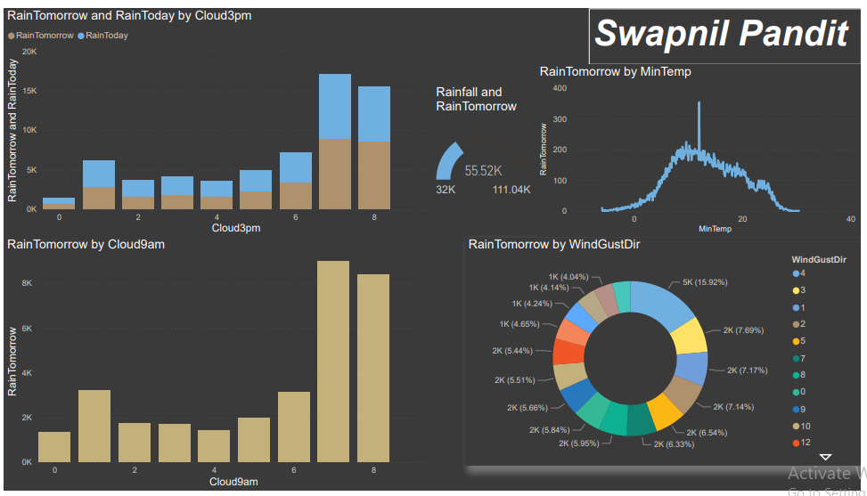
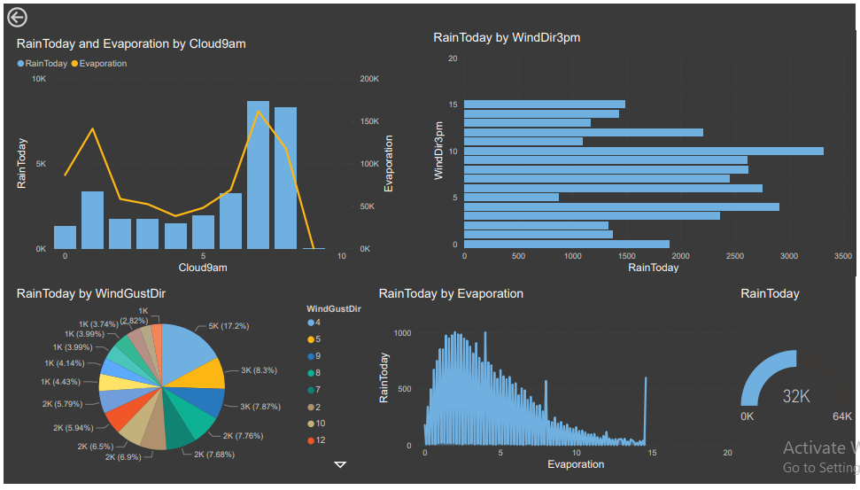
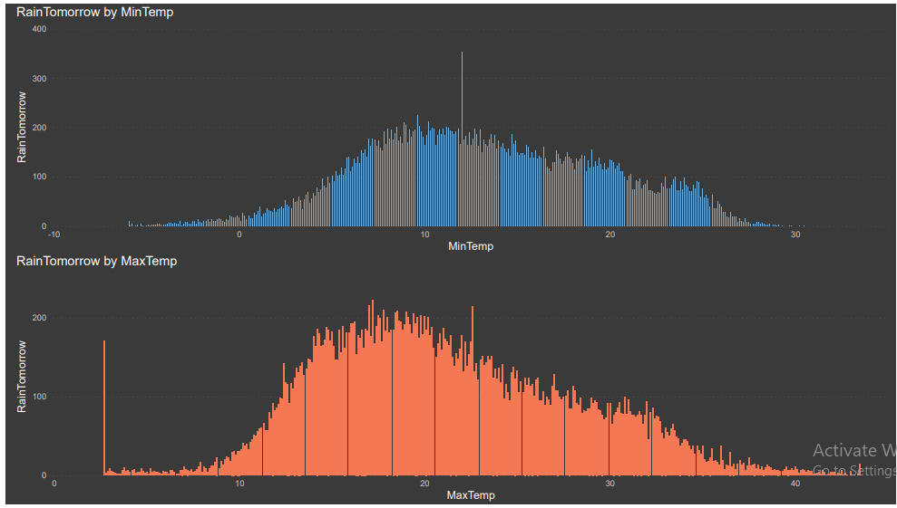
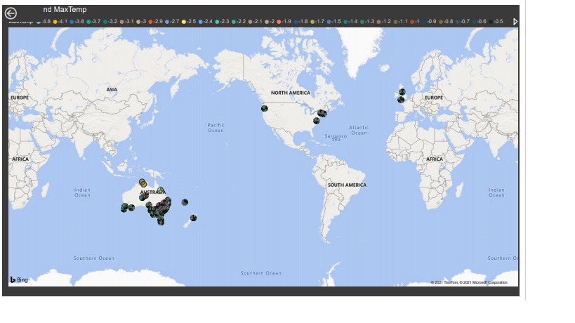

Rain Time Prediction is a web app which has a Machine Learning model running at the back. The purpose of developing this app is to predict whether it will rain the next day or not. This model is based on the Rain Prediction in Australia dataset. check ML algo which is fit for this model. More than 80% of Australia has an annual rainfall of less than 600 mm which is less among the all continents other than Antartica which recieves less rainfall. A place inland near Lake Eyre would only receive 81 mm of rain annually. The average annual rainfall in the Australian desert is low, ranging from 81 to 250 mm. Thunderstorms are relatively common in the region, with an annual average of 15 to 20 thunderstorms. The southern parts of Australia get the usual westerly winds and rain-bearing cold fronts that come when high–pressure systems move towards northern Australia during winter. Cold snaps may bring frosts inland, though temperatures near the coast are mild or near mild all year round. Summers in southern Australia are generally dry and hot with coastal sea breezes. During a lengthy dry spell, hot and dry winds from the interior can cause bushfires in some southern and eastern states, though most commonly Victoria and New South Wales. The tropical areas of northern Australia have a wet summer because of the monsoon. During "the wet", typically October to April, humid north-westerly winds bring showers and thunderstorms. Occasionally, tropical cyclones can bring heavy rainfall to tropical coastal regions, which is also likely to reach further inland.
This dashboard is done using a software called PowerBI which is a product of Microsoft. Here I have just attached the images of the dashboard because PowerBI needs oraganizational account. So to see the visualizations interactive I am attaching my PowerBI dashboard file. This requires PowerBI software to open the file. The usage of dashboards like these is to bring a better understanding about the dataset and also to bring some beautiful insights
   Hello, I'm Swapnil Pandit, a inspire data scientist from sangli, india. Currently I'm learning Machine learning, Deep learning, Data analysit, Computer Vision and, NLP. I have expirence as web developer intern in a Vision Software Development, Pune. As I'm frasher I'm trying to do own project like Face Attendance System, House praice prediction, rain prediction and so on in automation system(data science). I'm also developed some college projects like Attendance System, EVM, D.B.P.System